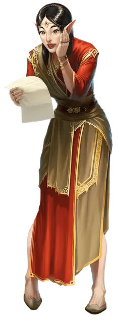

Награждённый
Rewarded

Вы прожили трудную жизнь, прежде чем ваша судьба внезапно изменилась благодаря чудесному повороту фортуны. Возможно, доброжелательное божество дало вам именно то, чего вы больше всего желали. Возможно, вы наткнулись на колоду многих вещей [deck of many things] и вытянули карту с мощным положительным эффектом. Или, может быть, вы унаследовали скромное состояние от дальнего родственника, о котором даже не подозревали.
Несмотря на это, вы оставили повседневные невзгоды своего прежнего бытия позади в пользу жизни, полной приключений и волнений. Ваши старые долги оплачены, обязанности, которые вы считали неизбежными, остались позади, или вы внезапно обретаете редкие и необычные навыки, неизвестные обычным людям.
Владение навыками: Проницательность, Убеждение
Языки: один на ваш выбор
Владение инструментами: один игровой набор на ваш выбор (например, игральные карты или ставка трёх драконов)
Снаряжение: Бутылочка с чёрными чернилами, чернильная ручка, пять листов бумаги, игровой набор (соответствующий выбранному вами навыку), кольцо-печатка, комплект отличной одежды и кошель с 18 зм
Умение: улыбка Фортуны
Ваша неожиданная удача отражается в незначительном благе. Вы получаете черту Везунчик, Посвящённый в магию или Одарённый (на ваш выбор). Ваш выбор черты отражает трансформацию, которая изменила вашу жизнь. Встреча с джинном, исполнившим три желания, могла привести к появлению магических сил, представленных Посвящённым в магию. Если вы погасили все свои семейные долги с помощью удачного раунда в ставку трёх драконов, вместо этого вы могли получить Везунчика. В качестве альтернативы вы можете получить черту Одарённый чтобы отразить любое испытание, которое вы пережили обретя новую судьбу, и отразить знания и способности, переданные вам какой бы то ни было силой, изменившей вашу жизнь.
Создание награждённого персонажа
У награждённых персонажей разные истории, но у них есть одна общая черта: им крупно невезло до того как их жизнь резко изменилась. Они могли бы оставить всякую надежду на более счастливую жизнь только для того, чтобы внезапно получить второй шанс. Награжденный персонаж часто проводит много лет, пытаясь избежать болезненных обстоятельств. Теперь, вырвавшись из тюрьмы (иногда буквальной) прежней жизни, они бросают свои заботы на ветер и становятся авантюристами.
Если жизнь вашего персонажа изменилась из-за колоды многих вещей [deck of many things], подумайте, какая карта в этом виновата. Возможно, карта Судьбы исправила трагическую ошибку, которую ваш персонаж совершил в юности. Карта Драгоценность могла бы погасить долги, возникшие за всю жизнь. Возможно, карта Визиря дала совет, необходимый для выхода из безнадежной ситуации, карта Звезды увеличила показатель характеристики до текущего значения или заклинание исполнение желаний [wish], наложенное после вытягивания карты Луны, превратило вашего персонажа из коробейника в начинающего колдуна, наделенного магией и новыми знаниями и навыками. Если вы создаете персонажа выше 1-го уровня, имеющиеся у него магические предметы могли быть предоставлены картой Ключа или Солнца.
Рекомендуемые характеристики. Взгляд вашего персонажа на жизнь изменился благодаря его новой судьбе. В таблице «Черты характера награждённого» представлены черты, которые вы можете перенять для своего персонажа, а также карты из колоды многих вещей, которые могли бы продиктовать появление этой черты.
Черты характера награждённого
| к6 | Черта характера |
| 1 | Безопасный дом — это фундамент, на котором можно построить все остальное. (Ключ, Трон) |
| 2 | Я был вознесен на высоты, которых иначе никогда бы не смог достичь, и я не потрачу своё состояние впустую. (Звезда, Солнце) |
| 3 | Я стараюсь быть источником вдохновения и радости для других. Жизнь никогда не так ужасна, как вы думаете! (Эвриала, Шут) |
| 4 | Мужество и смелость помогут победить, когда всё остальное не поможет. (Комета, Рыцарь) |
| 5 | Моя удача означает, что я могу воодушевлять и других. (Драгоценность, Луна) |
| 6 | Правильные ответы — это первый шаг к решению любой проблемы, какой бы серьёзной она ни была. (Судьба, Визирь) |
Безделушки награждённого. Когда вы создаете своего персонажа, вы можете сделать один бросок по таблице «Безделушки награждённого», а не по таблице «Безделушки» в «Книге игрока» для вашей стартовой безделушки.
Безделушки награждённого
| к6 | Безделушка |
| 1 | Ароматный шелковый шарф от поклонницы. |
| 2 | Хрустальная бусина, светящаяся в темноте, как свеча. |
| 3 | Рекомендательное письмо и приглашение от влиятельного человека из далёкого города. |
| 4 | Девиз или символ, значение которого ускользает от вас, выгравированный на части вашего снаряжения. |
| 5 | Ворсистая игральная карта, которая никогда не рвётся и не пачкается, изображающая карту, которая повлияла на вас. |
| 6 | Половина медальона, предназначенная для соединения со своей второй половиной. |